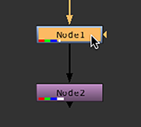
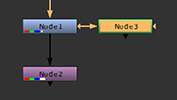

可以使用工具栏、选项卡菜单或右击菜单添加节点。添加节点时, Nuke 自动将其连接到当前选定的节点。
使用工具栏
| 1。 | 通过单击新节点来选择要跟随的现有节点。 |
| 2. | 单击工具栏上的图标，然后从显示的菜单中选择节点。例如，如果要添加模糊节点，请单击 过滤器 图标并选择 模糊 . |
注意: 您可以按菜单图标上的鼠标中键来重复该菜单中使用的最后一项。例如，如果您首先从 过滤器 菜单中，您可以添加另一个模糊节点，只需按下鼠标中键 过滤器 图标。
使用标签菜单
| 1. | Select the existing node that you want the new node to follow by clicking on it. |
| 2. | 按下 标签 键入并开始键入要创建的节点的名称。 |
这将打开一个提示，显示匹配列表。
| 3. | 要从列表中选择要添加的节点，您可以单击该节点，或者使用 向上 和 下来 箭头键并按 返回 . |
注意: 要添加使用此方法创建的最后一个节点，只需按 标签 然后 返回 .
使用右击菜单
要使用右击菜单添加节点，请执行以下操作:
| 1。 | 在您希望新节点跟随的现有节点上单击鼠标右键。 |
| 2. | 从打开的菜单中，选择要添加的节点。 |
注意: 还可以使用键盘快捷键添加节点。工具栏中的大多数菜单都在相关项目旁边包含相关键盘快捷键的注释。
添加节点树的新分支
要在节点树的新分支中添加节点，请执行以下操作:
| 1. | Select the existing node that you want the new node to follow by clicking on it. |

| 2. | 按住 转变 并使用工具栏、选项卡菜单或右键单击菜单创建节点。要使用选项卡菜单在新分支中添加节点，请按 标签 先键，然后按住 转变 选择新节点时。 |

节点将添加到节点树的新分支中的选定节点之后。